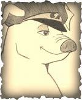

Snowball (me) is a boar, who was originally born before the time of the rebellion. He was a very intellectual pig, just like other pigs. He had high competition with one paticular pig, Napoleon. He bravely led the rebellion, and also lead the Battle of The Cowshed. At last, they finally had peace. He changed everything from that point on. Soon after, though, he was chased out of his leadership by Napoleon, literally and none literally. Sadly, it ended not after a long time.. Hopefully his great leadership will come back some day!
 History Page FAQ page About Me Page Join rebellion!